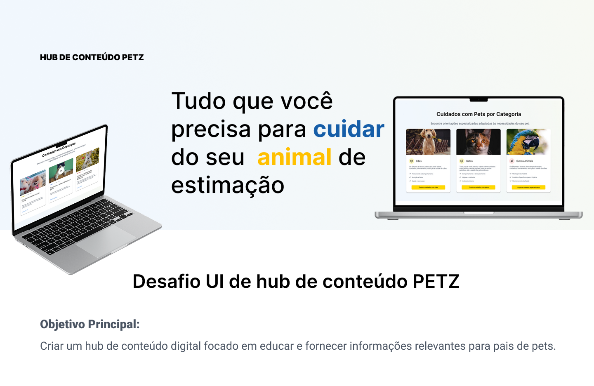
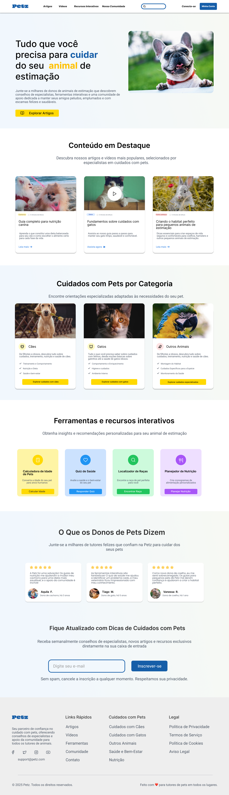
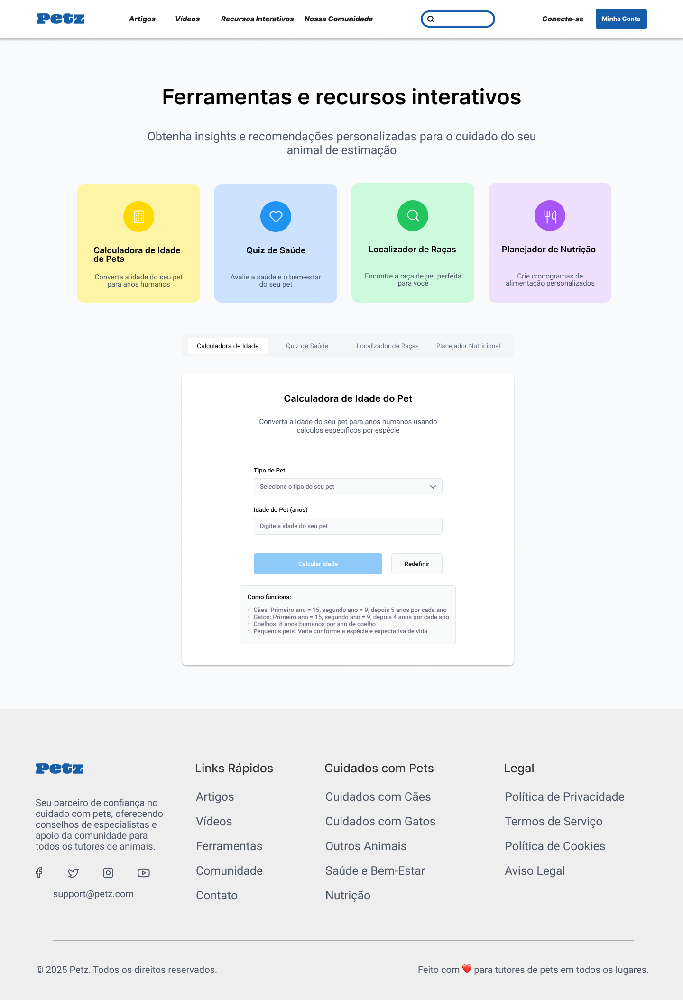
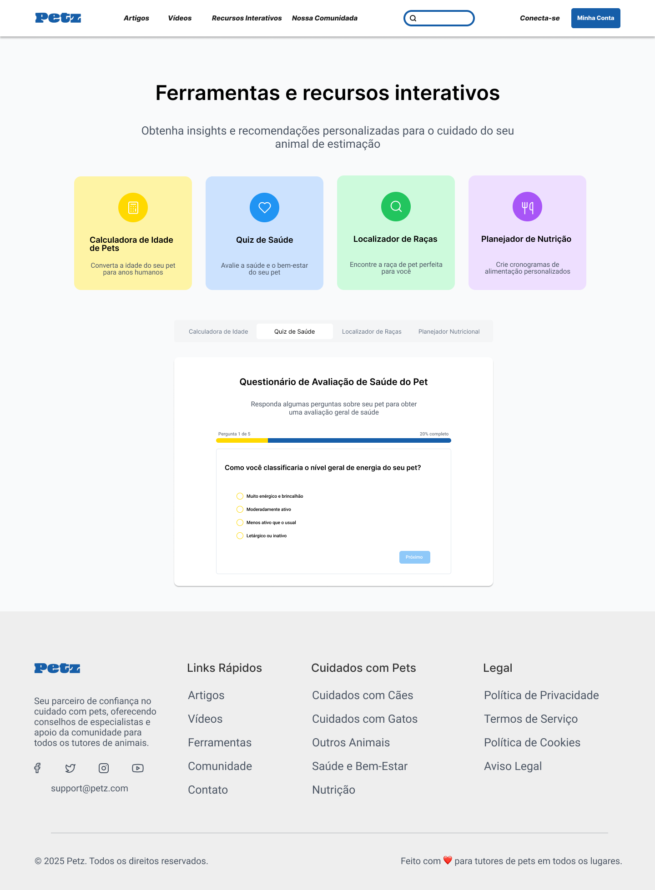
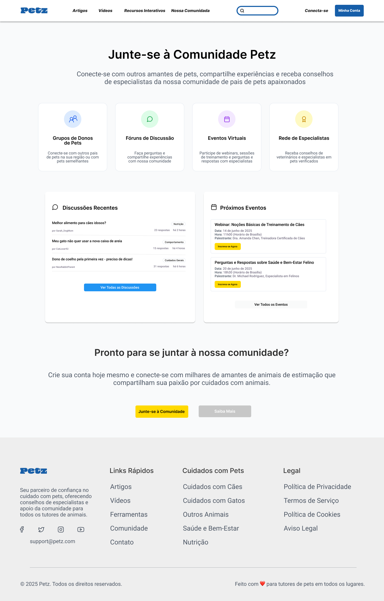

◆ MISSÃO CONCLUÍDA ◆
HUB de Conteúdo Petz
Projeto conceitual de UI para um hub de conteúdo educativo sobre cuidados com pets: artigos, ferramentas interativas e comunidade em um único ecossistema, pensado pra ir muito além de uma vitrine de produtos.

O Projeto
Objetivo principal: criar um hub de conteúdo digital focado em educar e fornecer informações relevantes para pais de pets: um espaço onde o tutor encontra resposta pra sua dúvida antes mesmo de pensar em comprar alguma coisa.
A proposta parte de um problema comum em e-commerces de pet shop: o site inteiro gira em torno do carrinho de compras, e conteúdo educativo (quando existe) fica perdido em um blog qualquer. Aqui a lógica se inverte: o hub tem três pilares que se sustentam sozinhos: conteúdo (artigos e vídeos), ferramentas (ajuda prática e interativa) e comunidade (outros tutores e especialistas).
Conteúdo
Artigos e vídeos organizados por categoria de animal, com autoria clara e tempo de leitura.
Ferramentas
Calculadora, quiz, localizador de raça e planejador: recursos interativos que geram valor imediato.
Comunidade
Fóruns, grupos e eventos com especialistas, pra manter o tutor engajado além da primeira visita.
Home: Conteúdo e Confiança
A home abre com uma proposta de valor direta: "Tudo que você precisa para cuidar do seu animal de estimação", seguida de três blocos que fazem o trabalho pesado da página:
Conteúdo em Destaque traz os artigos e vídeos mais relevantes em formato de card, com categoria e tempo de leitura visíveis antes do clique. Cuidados com Pets por Categoria organiza tudo por Cães, Gatos e Outros Animais, cada um com uma lista de checkpoints (treinamento, nutrição, saúde) e uma call-to-action própria. Por fim, depoimentos reais de tutores e uma captura de e-mail fecham a página com prova social e retenção.

Ferramentas Interativas
O coração diferencial do hub. Em vez de só informar, a página de ferramentas deixa o tutor fazer alguma coisa e sai dali com uma resposta personalizada.
Calculadora de Idade
Converte a idade do pet pra "anos humanos", com regra de cálculo diferente por espécie.
Quiz de Saúde
Questionário de 5 perguntas com barra de progresso, pra avaliar o bem-estar geral do animal.
Localizador de Raças
Ajuda a encontrar a raça de pet ideal a partir do perfil de quem procura.
Planejador de Nutrição
Monta um cronograma de alimentação personalizado para o pet.
As quatro ferramentas dividem o mesmo shell de interface (um sistema de abas), o que mantém a experiência consistente mesmo trocando de recurso, sem recarregar a página nem perder contexto visual.


Comunidade
A última camada do hub é social: Grupos de Donos de Pets, Fóruns de Discussão, Eventos Virtuais e uma Rede de Especialistas verificados. Na prática, isso vira duas listas vivas na página: discussões recentes da comunidade e os próximos webinars/eventos com especialista, reforçando que o hub continua entregando valor depois que o tutor já leu os artigos e usou as ferramentas.

Conclusão
O HUB de Conteúdo Petz mostra um jeito diferente de pensar UI pra marcas de pet: em vez de otimizar só a conversão, o projeto constrói confiança em camadas: primeiro educando, depois ajudando na prática com ferramentas e por fim conectando o tutor a uma comunidade. Cada seção usa uma cor de destaque própria (amarelo, azul, verde, roxo) pra diferenciar os blocos sem quebrar a identidade visual da marca, mantendo consistência do início ao fim do fluxo.